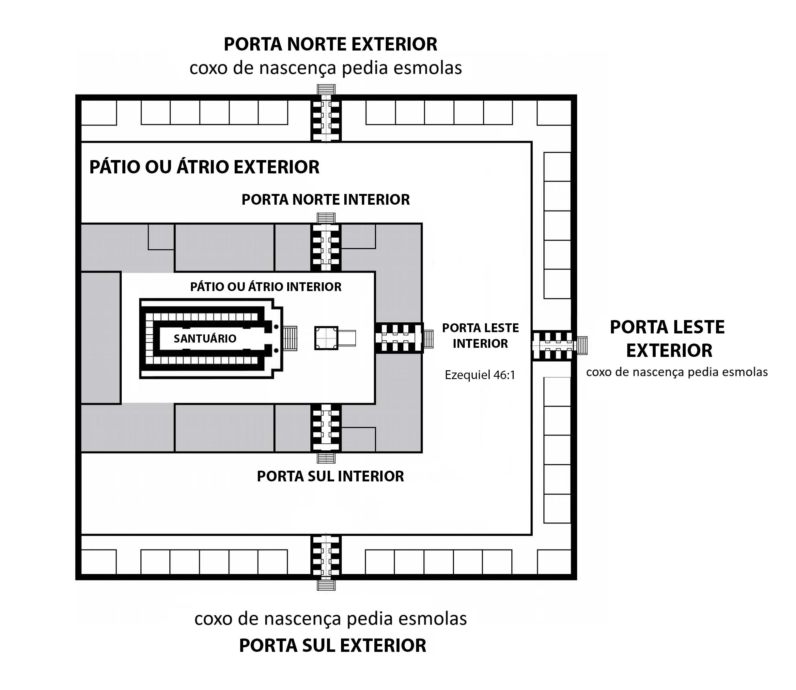

À guisa de introdução, diga-se, a guarda da Lua Nova transformou-se em palco de acalorado embate doutrinário, frequentemente hostilizada, atrai grandes controvérsias. Nesse ínterim, irmãos destoam as Escrituras focando macular a veracidade da aludida doutrina, estudam textos bíblicos com a mente viciada, formando opinião ao arrepio das Escrituras, torcem contextos de forma grosseira, ferindo de morte a hermenêutica, assim, garimpam as Escrituras em busca de provas desejando cercear a santificação e a guarda do dia da Lua Nova, como não encontram tais pontos, dissecam os textos bíblicos torcendo os contextos de forma rudimentar, para não consagrar o dia da Lua Nova, visando estorvar a santidade do primeiro do mês.
Na ótica dos contradizentes, a guarda da Lua Nova limita-se à Nova Terra, ou então ironizam dizendo, os hebreus trabalharam nesse dia, não existe a expressão nenhuma obra servil fareis, por isso não é dia santo, no entanto, quando a consciência pesa, mitigam celebrando semana de oração ou proclamando jejum. Assim sendo, cometem grave equívoco, Sábados, Luas Novas e festividades, são dias santos, não podem ser dedicados a jejum, exceto da Expiação, pois são dias festivos, de alegria e júbilo, não de tristezas e aflições. Jejum consiste em sacrifício, pesar e aflição, destarte, as Escrituras proíbem jejuar nos aludidos dias; considerando grave pecado sacrificar o dia tomado pelo Senhor para adoração e jejuar nesse dia com objetivo de não perder um dia de trabalho secular. Jejuar transcende permanecer vinte e quatro horas em abstinência de alimento e bebidas. Para consolidar o axioma ventilado, se faz necessário examinar um texto elucidativo, proibindo jejum voluntário em dia de Sábado, Lua Nova e festividades, o supracitado texto encontra-se esculpido no livro de Judite, embora chamado apócrifo e por isso, muitos o desprezam, esses livros eram apreciados e acolhidos na Igreja Patrística:
Já os pais da igreja de períodos posteriores quase não estabeleciam diferenças entre os livros apócrifos e o Antigo Testamento e introduzem citações a ambas as coleções com as mesmas fórmulas.
DORNELES, Vanderlei.. Comentário Bíblico Adventista do Sétimo Dia a. V. 1. 1. ed. Ed. Casa publicadora Brasileira, 2011. pág. 19
Este exemplo autoriza usar textos dos referidos livros, confira: Judite 8:6. Escritos da lavra de Ellen White endossam esta assertiva:
Enquanto os cristãos geralmente continuavam a observar o domingo como festividade prazenteira, ele os levou, a fim de mostrarem o seu ódio ao judaísmo, a fazer do sábado dia de jejum, de tristeza e pesar.
WHITE, Ellen Golden. O Grande Conflito. 30. ed. Ed. Casa publicadora Brasileira, 1985. pág. 49
Segundo o brilhante texto, Satanás induz os incautos jejuarem no festivo dia do Sábado, ou na expressão do texto, tenta fazer do sábado dia de jejum, tristeza e pesar, Sábado é dia de alegria, louvor e adoração, é o dia do Senhor, assim como a Lua Nova.
Leia-se, Judite jejuava em qualquer dia do ano, salvo Sábados, Luas Novas e festividades. Com efeito, porque são dias de alegria, de encontrar-se com o Senhor, santos, consagrados à adoração, portanto conclui-se, não é permitido jejuar em dia santo, jejum denota vinculo de aflição, pesar e tristeza. Por certo, é um grande despautério, substituir a santificação do dia da Lua Nova por jejum voluntário. Com isto, deixam de cumprir ordem divina, para fazer, ao arrepio da Escritura, algo proibido por Deus. Pior ainda, não colherão os resultados almejados com o jejum, debalde será esse sacrifício, Deus não os atenderá, por tratar-se de jejum egoísta, cuja finalidade é satisfazer seus próprios interesses, segundo exorta o profeta dizendo: Isaías 58:3. A resposta é clara, transformar dia santo em jejum, cuidar dos próprios interesses, contrariando ordem divina, não é consagração, mas, apostasia, presunção e rebeldia.
Apenas a Igreja Remanescente aceitará todas as verdades
Em verdade, é inarredável destacar a grande controvérsia deflagrada entre Deus e o Diabo perdurando através dos séculos, com drásticas consequências para sua igreja. No início Deus pôs inimizade entre a mulher (igreja) e a sinagoga de Satanás: Genesis 3:15. Satanás pica a mulher, Igreja de Deus, fazendo-a tropeçar nas veredas dos séculos fomentando prazeres e orgias, por vezes, volta a picar a mulher fazendo-a abandonar os mandamentos estatutos e preceitos de Deus, desviando-a do caminho, por outro lado, a mulher fere a cabeça de Satanás, alimentando-se da natureza divina de Cristo, indiferente aos prazeres do mundo e a luxúria impudica, consagrando sua vida no amor e obediência aos santos mandamentos, estatutos e preceitos do Senhor, entre eles a Lua Nova. Ademais, a história deste mundo aproxima-se do fim, são tempos perigosos, destarte, o Senhor preservou seus servos de erros fatais misturados com verdade concedendo a sua igreja conhecimento de todas as verdades, confira:
Os diferentes grupos de professos crentes têm cada um deles um pouco de verdade, mas Deus deu todas essas verdades aos seus filhos que estão sendo preparados para o dia de Deus. Ele tem dado verdades que nenhum desses agrupamentos conhece nem entenderão. Coisas que para eles são seladas, o Senhor abriu aos que verão e estarão prontos a compreender.
WHITE, Ellen Golden. Primeiros Escritos, 3. ed. Ed. Casa Publicadora Brasileira, 1988. pág. 124
Os citados agrupamentos não conseguem entender a verdade, seus depravados corações fecharam-se para a justiça de Cristo palpitando avidamente por prazeres seculares. Resistindo consagrar a vida ao Senhor, as igrejas populares abriram porteiras de apostasia, os ouvidos criam comichão opondo-se ouvir a verdade, contudo, estão apurados para ouvir coisas agráveis, rompendo com a sã doutrina adoram a criatura em detrimento do Criador.
Com esse enfoque, o apóstolo Paulo preocupou-se com a desfiguração doutrinária nos últimos dias, sentindo o perigo iminente exortou a igreja Remanescente: II Timóteo 4:2-4.Com efeito, chegou o tempo de repudiar a verdade, os supracitados agrupamentos religiosos não suportam ouvir a sã doutrina, é de bom tom a igreja continuar pregando por palavra e exemplo de obediência, mormente, quando se trata da Lua Nova dissipando espessas trevas doutrinárias, lenindo a responsabilidade da igreja. Nesta senda, as almas se perderão exclusivamente por recusar a verdade, trocando-a por fábulas e não por falta de quem a ensine.
Nesse viés, é imperioso enfrentar com bravura, o caótico estado de apostasia, o mundo religioso mergulhou em profunda treva espiritual rejeitando a sã doutrina, forçando assegurar com convicção, somente a igreja de Cristo, revestida de natureza divina consegue amar todas as verdades contidas em sua doutrina. De outro norte, os pseudos grupos de reformas e demais evangélicos, não conseguem entender verdades impopulares, porque:
Há nas Escrituras algumas coisas difíceis de entender e que segundo diz Pedro, os indoutos e inconstantes torcem (II Ped. 3:16) para a própria perdição. Não podemos explicar nesta vida o sentido de todas as passagens das Escrituras; não há, porém, pontos vitais da verdade prática, que fiquem envolta em mistérios. Todo fato que tem que ver de perto com a salvação de almas, será tornado tão claro, que ninguém precisa errar, ou andar em trevas.
WHITE, Ellen Golden. Testemunhos para a Igreja, V. 2. 1.ed. Ed. Casa Publicadora Brasileira, 2015. pág. 692
A dificuldade para entender textos difíceis reside na natureza pecaminosa alocada no coração, quando a justiça de Cristo penetra o coração, assemelhando-se ao óleo, acende a lâmpada iluminando toda a verdade na alma blindando-a contra erros fatais, corrupções e sofismas.
Destarte, no atual cenário de apostasia, os supracitados grupos religiosos, inclusive de Reforma, procuram preencher o vazio do coração com gritos de glória, secularismo e êxtase, fomentando avareza, cobiçando dízimos e ofertas, satisfazendo seus corações carnais com entretenimentos e festividades de natureza profana. São resistentes a guarda da Lua Nova, temendo faltar um dia de trabalho além do Sábado, santificado por metade. Tentam pacificar a consciência fomentando semana de oração a partir da Lua Nova. Como visto, somente os remanescentes, conhecedores de todas as verdades, estão habilitados compreender e obedecer às luzes do passado, presente e futuro, revestidos da justiça de Cristo e Efésios 2:20. Somente uma Igreja alicerçada em Cristo, nutrida de natureza divina, deveras, aceitará todas as verdades doutrinárias concebidas na palavra do Senhor, consequentemente receberá toda a luz celestial, tanto do passado como do presente, para amar e obedecer à sã doutrina estendendo-se a Nova Terra:
Toda luz do passado, toda luz do presente e que alumia até o futuro, conforme revelado na palavra de Deus é para todo o que aceita.
WHITE, Ellen Golden. Testemunho para a Igreja. Ed. Casa Publicadora Brasileira. pág. 81
A luz da verdade não penetra em corações renitentes e endurecidos. Toda alma cujo coração é regado pela apostasia deleitando-se na molície, jamais verá a alva.
Nesse compasso, é função da Igreja Remanescente aceitar e pregar a verdade ancorada na graça de Cristo para descortinar antigas verdades ocultas nos lixões de erros, neste sentido emerge lapidados ensinamentos dos Testemunhos:
Se, mediante a graça de Cristo, seu povo se tornar odres novos, Ele o encherá com novo vinho. Deus dará mais luz, e antigas verdades serão recuperadas e colocadas na moldura da verdade; e aonde quer que forem os obreiros vão triunfar. Como embaixadores de Cristo, eles devem investigar as Escrituras, procurar as verdades ocultas sob o lixo do erro; e todo raio de luz recebido deve ser comunicado aos outros. Review and Herald, Extra, 23 de dezembro de 1890. Citado por .
DANIELLS, Arthur G. Cristo Nossa Justiça. 2. ed. Ed. Casa Publicadora Brasileira, 2022, pág. 72-73
Novos odres, entenda, igreja revestida pela justiça de Cristo, receberá novo vinho, revelação de verdades antigas resgatada no esgoto dos erros, entre eles a Lua Nova. Mesmo sofrendo repúdio, máxime, por quem deveria pregar a verdade, os religiosos, no entanto são os mais cruéis escarnecedores e ferrenhos perseguidores da verdade, destarte, se faz necessário passar a doutrina de Cristo ao crivo da Lei e do Testemunho, segundo exorta o profeta: Isaías 8:20. A doutrina da Lua Nova não foi cravada na cruz, é luz do passado, vigora no presente e iluminará o futuro na Nova Terra, como será devidamente comprovado no presente artigo, ao crivo da Lei e Testemunhos.
A necessidade de um calendário religioso
Como prenota as Escrituras, quando Deus fez o céu, a terra, o mar e a fonte das águas, Ele criou os luzeiros, o sol e a lua, neste momento, com qual propósito? Gênesis 1:14. A lua nova serve de sinal do Éden ao Éden, portanto, não figura entre os tipos ou sombras do primeiro advento, não é típica, em assim sendo, não foi cravada na cruz. Com certeza o Senhor criou um calendário para distinguir dias, meses e anos, cada astro empunha uma função especifica. Salmos 103:19. O Senhor criou a lua para marcar os tempos, o calendário original deriva da Lua Nova, esta, tomou importância primorosa na contagem dos anos e no serviço religioso.
De fato, o advento do pecado e revelação do Plano de Redenção, concebeu a lei Cerimonial, com seus tipos, sombras, ritos e cerimônias, apontando o Messias vindouro. A Lua Nova não faz parte dos tipos, é sinal. O cumprimento dos tipos e sombras ocorreria nas Festas fixas, tanto os tipos do primeiro advento, como os tipos do segundo advento. Como cediço, a Festa dos Tabernáculos encerra o ano religioso, simboliza conclusão dos últimos eventos relacionados ao Plano de Redenção:
A festa dos Tabernáculos era a última festa do ciclo anual de serviços. Simbolizava a consumação final do plano de redenção.
HASKELL, Stephen N. A Cruz e sua Sombra. Ed. Vida Plena, 1997. pág. 245
Leia-se, as festas estão vinculadas ao Plano de Redenção. O calendário religioso, norteia o início das Festas, começando na Lua Nova de março. A Lua Nova do sétimo mês, dia das Trombetas, inicia o calendário civil, mesmo assim alguns irmãos sinceros insistem em delinear a celebração das Festas a partir do calendário civil e não do calendário religioso, lamentavelmente.
Nesse viés, se faz necessário frisar, o próprio dia do juízo encontra-se umbilicalmente adstrito à Festa dos Tabernáculos, simbolizado pelo dia da Expiação:
O dia do juízo é um tempo definido, separado, no qual se realiza uma obra específica. É um período de tempo. Deus julgará o justo e o perverso, pois há tempo para todo propósito e para toda obra. Eclesiastes 3:17. Deus não deixou o mundo em trevas com relação ao tempo do dia do juízo, do qual o dia da expiação, ou purificação do santuário, era um símbolo. Por meio do profeta Daniel, Ele predisse quando esse evento teria lugar.
HASKELL, Stephen N. A Cruz e sua Sombra. Ed. Vida Plena, 1997. pág. 196
Para celebrar as Festas era preciso um calendário, Deus supriu a lacuna criando o calendário unicamente lunar, divorciado de qualquer interferência do calendário solar: Eclesiástico 43:6-8. As Festas Bíblicas sempre foram regidas pelo calendário lunar, desde os primórdios, assim será até a consumação dos séculos.
Nesse compasso, as Festas foram instituídas visando cumprir o Plano de Redenção, com seus tipos e sombras, tanto do primeiro como do segundo adventos de Cristo. Em assim sendo, o Senhor precisava estabelecer um calendário, determinando o período para celebração de cada Festa com seus respectivos tipos, estes, deveriam se cumprir a seu tempo.
Dito isso, é inarredável alçar o propósito de Deus na criação dos astros, oferecer a humanidade capacidade de observar os tempos por ele determinado. O antigo calendário bíblico era determinado por sinais dos astros celestes, no caso a Lua Nova, posteriormente o supracitado calendário foi totalmente desfigurado e substituído por calendário baseado em cálculos matemáticos sofrendo forte influência persa, babilônica e romana originando o 13° mês chamado de veadar, embolismal ou embolísmico. É de bom alvitre os irmãos acolhedores do veadar (13° mês), conhecer o fundamento desse mês, distorcido por Hillel II:
Ao organizar o calendário judaico, a intenção de Hillel II era definir critérios claros que possibilitassem a adoção de um sistema único pelos judeus do mundo inteiro. Por isso, abandonou-se a variabilidade entre 29 e 30 dias de que cada mês gozava até então, fixando-se rigidamente a duração de cada um dos 12 meses, o que tornou menos relevante a observação do primeiro crescente. Também se definiu em que anos do ciclo lunissolar de 19 anos o décimo terceiro mês deveria ser intercalado, relegando ao passado a regra da observação da cevada madura. Atualmente, os rabínicos intercalam o mês adicional invariavelmente no terceiro, sexto, oitavo, décimo primeiro, décimo quarto, décimo sétimo e décimo nono anos do ciclo. Os novos parâmetros criaram uma rigidez antinatural do calendário o que distorceu seus fundamentos, rompendo o elo com o calendário seguido nos tempos de Daniel, Esdras, Ester e Jesus.
Dentre os critérios introduzidos pela reforma de Hillel que distorceram o sistema do calendário judaico, possivelmente o de maior consequência tenha sido o da fixação arbitrária de 16 de nisan no equinócio da primavera como parâmetro geral. Uma instrução rabínica do quarto século afirma: Quando tu vires que o tequphah ou ciclo de tebeth se estenderá ao décimo sexto dia de nisan, declara aquele ano um ano embolísmico ou intercalar sem hesitação.
Parousia, 2007, O Novo Israel, 23 de setembro ou 22 de outubro? pág. 88
Por mera pressão romana, Hillel II instituiu o calendário fixo baseado na forma romana de contar o tempo, criando o veadar ou 13º mês. O mês lunar tem 29 dias e meio. Implica em um mês de 29 dias e o outro de 30 dias. Quando o mês é de 29 dias, sobram 12 horas e 44 minutos adicionados no próximo mês de 30 dias. A Lua Nova não deve ser observada no crescente visível, mas no alinhamento entre a Terra, lua e sol, chamado de convergência ou conjunção. No momento do alinhamento a lua está em seu ponto zero, no primeiro segundo é Lua Nova, começa novo ciclo, novo mês, contudo, quem observa o crescente visível o mês começa três dias após a conjunção quando a lua é avistada no céu. Em verdade quem pretende guardar a Lua Nova no crescente visível, não guarda o dia da Lua Nova, mas, do crescente visível, a lua foi nova três dias antes, o mês iniciou três dias antes do crescente visível. Resta esclarecer como Israel descobria qual dia era Lua Nova. A resposta encontra-se cunhada no livro de Samuel: I Samuel 20:18. Como Jônatas sabia qual dia era Lua Nova? Observando o último minguante visível (dois dias antes da conjunção ou ponto zero) e não o crescente visível (três dias após a conjunção). Para saber o dia da conjunção, ou alinhamento entre Terra, lua e sol, Jônatas tinha avistado o último minguante visível um dia antes, portanto ele sabia, dois dias após o último minguante visível, seguramente é Lua Nova.
Nesse diapasão, é de bom alvitre lembrar, o calendário bíblico encontra-se umbilicalmente adstrito à lua nova. A lua Nova porque ela condiciona o início do mês, cujo primeiro dia é determinado pela convergência (alinhamento do Terra, lua e sol, ponto zero) e não crescente visível ou primeiro crescente ou primeira visibilidade, o momento da ocorrência deste fato, é três dias após a convergência. Conforme prova abaixo elencada, o calendário farisaico adota o crescente visível:
A determinação do mês segundo o calendário farisaico era feita com base no crescente visível. Assim sendo, só se conhecia de fato o início de um determinado mês no dia em que a lua crescente fosse primeiro avistada.
Porque o Calendário Judaico Atual não é o Calendário Bíblico, extraído do livro O Calendário de YHWH, www.torahviva.org
Esta malsinada prática foi absorvida das nações pagãs por Israel. Na religião cananeia a lua era o deus Yerach e desposava Shamash. O profeta Isaías denuncia a prostituição de Israel, adorando o crescente visível, simbolizada por uma imagem em forma de meia lua: Isaías 3:16-18. Como exposto, Israel assimilou adoração cananéia a Yerach, deus lua do crescente visível, abandonando a guarda da Lua Nova pelo ponto zero, conjunção ou convergência abolindo o Calendário Original, causando sérias distorções ao calendário, afetando a celebração dos dias festivos. Os judeus abandonaram o Calendário Original, criando seis calendários distintos, a saber:
Calendário Samaritano,
Calendário Fariseu/Mishnáico,
Calendário Essênio/Saduceu,
Calendário Proto-Hillel II,
Calendário Hillel II,
e por fim Calendário Caraíta
Nenhum deles iniciava pela conjunção, alinhamento entre Terra, Lua e Sol. Coube a Hillel II, criar o calendário fixo, ciclo metônico de dezenove anos, introduzindo o 13º mês intercalar ou embolismal, causando danos ainda maiores. A famigerada adulteração perdura aos dias atuais, contaminando as igrejas de Reformas.
Que tipo de trabalho Israel dedicava na Lua Nova?
O cerne da questão implica descortinar elucidativo fato, a Lua Nova ou primeiro de mês é dia santo ou não? Na ótica de alguns, não é dia santo pela ausência da expressão . Na visão de outros, Israel laborou na Lua Nova quando saíram do Egito, apontam Êxodo 40:1 como escudo. Nesse particular convém esclarecer, opositores da guarda da Lua Nova, com arrimo no supracitado texto esculpido em Êxodo 40:1, defendem trabalho secular no dia da Lua Nova, sob o gélido argumento de Israel prestar supostos serviços seculares nesse dia. Asseveram com vigor, os Israelitas levantaram o Templo, uma estrutura grandiosa como um circo, exigindo grande esforço humano. Fundamentam ainda, no primeiro dia do mês Bíblico, dia de Lua Nova, essa tarefa foi realizada por ordem do Senhor, portanto, se a Lua Nova fosse dia santo o Senhor não teria proferido tal ordem. Confira: Êxodo 40:1-5. Esse fato aconteceu na Lua Nova, primeiro dia do ano do calendário religioso, correspondente a lua nova de março, podendo cair no começo ou fim de março, noutro giro, para os adeptos do veadar é possível cair no princípio de abril:
No primeiro dia: Isto é, o primeiro dia do mês de abibe ou nisã, que seria final de março ou início de abril. Certamente não poderia haver tarefa melhor para o povo no primeiro dia de um novo ano do que começar a construir esse local de adoração.
DORNELES, Vanderlei. Comentário Bíblico Adventista do Sétimo Dia a. V. 1. 1. ed. Ed. Casa publicadora Brasileira, 2011. pág. 742
Comentário Bíblico Adventista expõe a forma adotada pelos adeptos do veadar, ano começando fim de março ou começo de abril. É pertinente ressaltar, o serviço realizado por Israel na Lua Nova foi único e exclusivamente de cunho religioso, não secular, como será exposto limpidamente.
Com efeito, convém tecer alguns comentários visando explicar outra controvérsia existente acerca da Festa da Páscoa e dos Pães Asmos, estas, podiam cair no fim de março ou começo de abril, não o primeiro mês do calendário Bíblico religioso, nesse sentido emerge ensinamentos do Comentário Bíblico Adventista, lembre-se, a regra do mês começar em abril, só cabe nas igrejas acolhedoras do veadar instituído pelo rabino Hillel II.
Destarte, a Festa da Páscoa começava no 14º dia da lua nova do mês de abibe do calendário Bíblico, segundo relata os Testemunhos:
As primeiras destas solenidades, a Páscoa a festa dos pães asmos, ocorriam em abibe, o primeiro mês do ano judaico, correspondente ao fim de março e princípio de abril. Era passado o frio do inverno, terminava a chuva serôdia, e toda a natureza se regozijava na frescura e beleza da primavera.
WHITE, Ellen Golden. Patriarcas e Profetas. 9.ed. Ed. Casa Publicadora Brasileira, 1989. pág. 573
Restou uma dúvida, começa no fim de março ou começo de abril, a Festa da Páscoa ou o mês Bíblico? Nesse sentido gravita a controvérsia.
Segundo prenota a Lei e os Testemunhos, a Páscoa e a Festa dos pães Asmos, ocorriam com a Lua Nova do mês de abibe, dependendo do dia da lua nova, a Festa podia cair no fim de março ou começo de abril e não o princípio do mês Bíblico. Explicando melhor, se o primeiro dia do mês de abibe começar até o dia quinze de março, as Festas cairão no fim de março, porque conta-se 14 dias para celebração da Páscoa, por outro lado, se o primeiro dia do mês de abibe cair depois do dia quinze de março, contando-se 14 dias, com certeza a Páscoa vai cair no princípio de abril, segundo sinaliza os escritos da irmã White ensinando categoricamente o tempo correto. Nesse viés, conclui-se, a Páscoa é celebrada no fim de março ou princípio de abril e não o começo do mês Bíblico:
O tempo da Páscoa era o fim de março ou começo de abril, e toda a terra estava adornada de flores, alegrada com os cânticos dos pássaros.
WHITE, Ellen Golden. O Desejado de Todas as Nações. 14.ed. Ed. Casa Publicadora Brasileira, 1986. pág.65
De fato, a celebração da Páscoa cai no fim de março ou começo de abril, dependendo do dia da Lua Nova, se a Lua Nova cair antes do dia 15 de março, a Páscoa é celebrada no fim de março, noutro giro, se cair depois do dia 15 de março, contando 14 dias vai cair no começo de abril, assim, todo resquício de dúvidas foi espancado com louvor.
Neste momento, insta volver atenção para construção do Santuário assentado em Êxodo 40:1, tema em comento, como visto, embora o Comentário Bíblico diga “construir o local de adoração” na verdade ele foi apenas montado nesse dia. Israel deixou o Egito, não havia local apropriado para adoração, então o Senhor através de Moisés, arrebanhou artesãos como Besalel, Oaliabe e outros para construção do Tabernáculo e utensílios, note, o Senhor não mandou construir o Tabernáculo no dia da Lua Nova, a construção foi despendida bem antes como se pode comprovar: Êxodo 39:32. No dia da Lua Nova, o Tabernáculo estava concluído, era impossível construir toda a estrutura em um único dia, foi possível montá-lo e consagrá-lo em um dia, segundo ordenou o Senhor.
Como já exposto, os israelitas não trabalhavam em serviços seculares no dia da Lua Nova, no texto esculpido em Êxodo 40:1, simplesmente montaram o Tabernáculo alojando seus respectivos utensílios para consagrar este magnífico local de adoração, era portátil e de fácil montagem, portanto, a Lua Nova era o dia propício para essa tarefa, o trabalho realizado não era secular, mas, religioso e por ordem do Soberano do Universo, segundo Comentário Bíblico:
No primeiro dia: Os v. 17 a 33 registram o momento em que o tabernáculo foi levantado. Como era portátil, isso poderia ser feito com facilidade em apenas um dia.
DORNELES, Vanderlei. Comentário Bíblico Adventista do Sétimo Dia a. V. 1. 1. ed. Ed. Casa publicadora Brasileira, 2011. pág. 742
É necessário examinar detidamente qual tipo de trabalho foi realizado no dia da Lua Nova, não olvide, no teor das Escrituras, o Santuário foi montado e purificado em apenas um dia, ademais, o Senhor escolheu o primeiro dia do ano, a Lua Nova de abibe para purificar o santuário, consagrando Arão seus filhos e demais utensílios sagrados, iniciando o serviço do Santuário: Ezequiel 45:18. A purificação do Santuário exigia cerimonialismo, consagração de sacerdotes e utensílios usando óleo específico para essa tarefa: Êxodo 40:9. A consagração do Santuário não estava concluída, faltava purificar as pessoas encarregadas de ministrar perante o Senhor no serviço sagrado, ou seja: Êxodo 40:12-13. Note, tudo isso foi feito em um único dia, na Lua Nova do primeiro mês do ano religioso, conforme ordenou o Senhor, depois de concluída a obra: Êxodo 40:34. O Senhor habitou no meio do seu povo, após a consagração do tabernáculo.
Em sinal de aprovação, a glória do Senhor inundou o recinto sagrado. Deus estava feliz com seu povo, por certo não houve nenhuma profanação do dia da Lua Nova, como dia de adoração, e o primeiro dia do mês, o Senhor achou por bem, no teor dos escritos de Ezequiel 45:18 consagrar o Santuário, Arão e os utensílios na Lua Nova, primeiro dia do ano, ordenando a montagem, purificação dos utensílios sagrados e dos sacerdotes para iniciar os trabalhos religiosos, inaugurando o serviço do santuário na sua divina presença, portanto, não houve nenhuma profanação por parte dos hebreus, eles adoravam o Senhor no dia da Lua Nova. Ademais, se o Senhor autorizar, não há profanação ou pecado, dá-se, por exemplo, o pão da preposição posto no santuário todos os Sábados pelo sacerdote.
É cediço de todos, no Sábado, era terminantemente proibido aos judeus acender fogo em seus lares ou cozer alimentos: Êxodo 35:3. Tão pouco, podiam assar pão no dia de Sábado, por ordem do Senhor: Êxodo 16:23. No entanto, após a consagração do santuário e o pleno funcionamento de seus serviços, o Senhor disse: Levítico 24:5-6;8. Todos os Sábados os descendentes de Coate, chamados de coatitas, assumiram o encargo de assar doze pães e colocar no santuário, substituindo os pães envelhecidos: I Crônica 9:32. Os pães eram retirados a cada Sábado e comido pelos sacerdotes, pães quentes, chamados de pães da preposição, eram postos sobre a mesa:
A mesa com os pães da preposição ficava ao lado do norte, com a sua corda ornamental, era ele coberto de ouro puro. Sobre esta mesa os sacerdotes deviam cada sábado colocar doze pães, dispostos em duas colunas, e aspergidos com incenso. Os pães que eram removidos, sendo considerados santos, deviam ser comidos pelos sacerdotes.
WHITE, Ellen Golden. Patriarcas e Profetas. 9. ed. Ed. Casa Publicadora Brasileira, 1989. pág. 359
A santidade do pão se resume a tipificação, representando Cristo, o pão da vida.
Segundo o Comentário Bíblico Adventista, os pães da preposição eram trocados todo Sábado por uma fornada nova, ou seja, eram assados no Sábado, sem infringir a Lei:
Pão Sagrado: Os 12 pães da preposição eram trocados todos os sábados por uma nova fornada. De acordo com as leis levíticas, o pão velho só podia ser comido pelos sacerdotes, no lugar santo (Lv 24:5-9).
DORNELES, Vanderlei. Comentário Bíblico Adventista do Sétimo Dia. V.2. 1. ed. Ed. Casa publicadora Brasileira, 2012. pág. 597
Mesmo proibido pela Lei, no Sábado os pães da preposição eram assados e não havia transgressão, tal como a montagem do Tabernáculo no dia da Lua Nova, cumpriam ordem divina, superior. Leia-se, no quarto mandamento está escrito: , o mandamento proíbe no Sábado e Lua Nova, a exemplo de laborar, negociar e atividades seculares, contudo, permite fazer a obra do Senhor. Quando o pão foi assado no Sábado e o santuário montado na Lua Nova, foi realizado trabalho do Senhor, perfeitamente permitido.
Na mesma toada, emerge relatos esclarecedores de Haskell, em sua obra, endossa essa afirmativa, os sacerdotes foram autorizados pelo Senhor a colocar pães quentes sobre a mesa no Sábado, assim sendo, os pães eram assados no Sábado:
Os sacerdotes não apenas deviam colocar o pão quente sobre a mesa no Sábado, como também posteriormente deviam comer aquele mesmo pão para que se tornasse parte do seu próprio ser. Deus designou que seu povo, a cada Sábado, alcançasse uma nova experiência nas coisas divinas, para estar melhor habilitado a enfrentar as tentações da semana. A alma que nunca atinge uma experiência mais profunda no Sábado do que em qualquer outro dia, fracassa em guardar o Sábado como Deus gostaria que o fizesse (Ezequiel 20:12). Quando os sacerdotes comiam o pão,... eles o assimilavam e recebiam forças para os deveres diários.
HASKELL, Stephen N. A Cruz e sua Sombra. Ed. Vida Plena, 1997. pág. 54
Cabe argumentar, os sacerdotes transgrediram a Lei por assar pães da preposição Sábado? O Sábado perdeu sua santidade porque o Senhor mandou assar os pães da preposição? Com efeito, não, era um trabalho de cunho religioso, ademais, ordenado pelo próprio Deus de Israel. De igual modo, a montagem do santuário no dia da Lua Nova, deveras, não descaracteriza a santidade desse dia, não houve qualquer transgressão, foi um trabalho executado por ordem do Senhor, estritamente religioso com a finalidade de consagrar o Tabernáculo, os utensílios e os sacerdotes ministradores do serviço solene, iniciando o culto de templo visando consumar a primeira parte do Plano de Redenção com a morte do cordeiro de Deus na cruz do calvário.
Os deveres solenes de Israel
Insta enfatizar, com a consagração do Tabernáculo, Tenda do Encontro, utensílios e sacerdotes, o Senhor organizou o serviço do Santuário estabelecendo deveres religiosos para o povo hebreu observar. As cerimônias típicas eram celebradas de acordo com cada evento e as Festas determinadas pela Lua Nova. Os deveres litúrgicos foram então distribuídos em sacrifícios diários, semanal, mensal e anual, todos eles bem distribuídos em perfeita ordem de formas e maneiras de execução. Todos estes deveres estavam escritos na lei do Senhor como parte integrante do culto. Cabe indagar, a Lua Nova está na Lei do Senhor? Fazia parte desses deveres sagrados?
Visando responder esta indagação, se faz necessário perquirir a reforma efetuada pelo rei Ezequias, do reino de Judá, após longo período de idolatria dos hebreus. Ezequias organizou os turnos dos sacerdotes e levitas, nomeou oficiais para o serviço litúrgico e fez provisões para manutenção do culto solene, o próprio rei contribuiu com ofertas regulares para o serviço do templo, no modelo estabelecido por Davi. O festejado rei descobriu quais dias a Lei do Senhor exigia celebração de culto com oferecimento de ofertas, holocausto e sacrifícios em sinal de adoração ao Criador: II Crônicas 31:3. Mediante apresentação do elucidativo texto, restou seguramente comprovado, a Lua Nova está contida na Lei do Senhor como dia de adoração.
Em verdade, o culto celebrado ao Senhor consistia em oferecimento de holocausto, símbolo de Cristo, cujo tipo deveria impressionar os hebreus e motiva-los evitarem o pecado, com este propósito eram oferecidos sacrifícios nesses dias solenes. Com efeito, esclarece os Testemunhos, os dias consagrados para celebração de cultos, eram distribuídos em deveres diário, semanal, mensal e anual, como se pode ver:
O culto cotidiano consistia no holocausto da manhã e da tarde, na oferta de incenso suave no altar de ouro, e nas ofertas especiais pelos pecados individuais. E também havia ofertas para os Sábados, Luas Novas e solenidades especiais.
WHITE. Ellen Golden. Patriarcas e Profeta. 9. ed. Ed. Casa Publicadora Brasileira, 1989. pág. 364
Cada sacrifício cumpria seu propósito, continuamente na presença do Senhor. Conforme atestou a lei e os Testemunhos, a Lua Nova fazia parte dos dias consagrados, escrito na lei do Senhor.
Como é cediço, o Santuário era o centro de adoração do antigo Israel. Os holocaustos símbolo de Cristo, redentor do pecador penitente, eram oferecidos em dias destinados para adoração, nos culto diário, no Sábado, na Lua Nova e nas Festas fixa do Senhor, no entanto, os cultos não eram relegados unicamente a oferecimento de sacrifícios de holocausto: I Crônicas 23:30-31. É imperioso destacar, os cultos celebrados em Israel não se resumiam em oferecimento de sacrifícios de animais, os levitas cantavam louvores ao Senhor nos cultos da manhã e da tarde, como no Sábado e Luas Novas havia instruções, conforme a Lei do Senhor determinava, se referindo de forma incontestável, ao Sábado e Luas Novas como dias solenes.
Insta analisar, em breve síntese, cada dever determinado pela lei do Senhor, começando pelo dever diário: Números 28:3-4. Estes sacrifícios eram oferecidos continuamente na presença do Senhor como dever diário, assim a igreja remanescente toma por exemplo, celebrando os cultos domésticos todos os dias, pela manhã e ao pôr do sol, destarte se reporta, outrossim, a irmã White:
Toda manhã e tarde, um cordeiro de um ano era queimado sobre o altar, com sua apropriada oferta de manjar, simbolizando assim a consagração diária da nação a Jeová, e sua constante necessidade do sangue expiatório de Cristo.
O apóstolo Paulo aponta para este sacrifício como uma ilustração do que os seguidores de Cristo devem tornar-se. Diz ele: Rogo-vos, pois, irmãos, pela compaixão de Deus, que apresenteis os vossos corpos em sacrifício vivo, santo e agradável a Deus, que é o vosso culto racional (Romanos 12:1).
As horas designadas para o sacrifício da manhã e da tardinha eram consideradas sagradas, e, por toda a nação judaica, vieram a ser observadas como um tempo reservado para a adoração. Neste costume tem os cristãos um exemplo para a oração da manhã e da noite
WHITE. Ellen Golden. Patriarcas e Profetas. 9. ed. Ed. Casa Publicadora Brasileira, 1989. pág. 364-365
Para o ínclito apóstolo Paulo, a celebração dos cultos diários, deve continuar nos mesmos horários do antigo Israel, mudando apenas a forma de adoração, agora, como sacrifício vivo santo e agradável a Deus, com culto racional. Os sacrifícios de animais, foram cravados na cruz, sobreviveu a consagração dos dias de culto domésticos, pela manhã e tarde, nem tudo foi cravado na cruz, existem tipos do primeiro e do segundo advento, o aludido texto é puro exemplo, quando Paulo transforma os sacrifícios de animais em sacrifícios espirituais, mantendo o dia de adoração restou comprovado, estes deveres estão em vigor, outro exemplo de peso, diz respeito à data da Santa Ceia, é celebrada na data quartodecimana, ou 14° dia do primeiro mês do calendário Bíblico, Cristo tão somente mudou a forma de cordeiro para pão e vinho. Da mesma forma, são os deveres semanais, mensais e anuais.
Destaca-se no segundo momento, o estudo do dever semanal: Êxodo 20:8, segundo afirma a Palavra de Deus: Ezequiel 20:20. A Escola Sabatina, com a devida guarda do Sábado é um dever semanal, imiscuído pelo Senhor na vida espiritual de seu povo, vem de longa data, a partir da criação como prova de devoção ao verdadeiro e único Deus:
O Sábado não é apresentado como uma nova instituição, mas como havendo sido estabelecido na criação. Deve ser lembrado e observado como a memória da obra do Criador. Apontando para Deus como aquele que fez os céus e a terra, distingue o verdadeiro Deus de todos os falsos deuses. Todos os que guardam o sétimo dia, dão a entender por este ato que são adoradores de Jeová. Assim é o Sábado o sinal de submissão a Deus por parte do homem.
WHITE. Ellen Golden. Patriarcas e Profetas. 9. ed. Ed. Casa Publicadora Brasileira, 1989. pág. 313
O Sábado é sinal entre Deus e seu povo, um memorial da criação, instituição obedecida pelo povo de Deus do Éden ao Éden. Sem sombra de dúvida é um dever semanal.
De fato, o dever mensal é o mais polêmico, trata-se da guarda da Lua Nova. É o dia santo mais odiado pelos religiosos, repudiam a guarda da Lua Nova, esquivam-se maliciosamente, para eles, a única Lua Nova a ser guardada hoje é a Trombeta, no entanto a Escritura ensina de modo contrário: Números 28:11-14. Seguindo o curso das Escrituras, temos o dever de guardar todas as Luas Novas, vejam a ordem: . Deveras, trata-se de um Assim diz o Senhor para a igreja de Deus. A lua Nova do sétimo mês é especial, por tratar-se da trombeta, convocando o povo de Deus para Expiação no dia 10 do sétimo mês, contudo, não anula o dever mensal de cada Lua Nova para a igreja atual e no futuro, na Nova Terra. Por fim, conclui-se, Sábado e Luas Novas, não são típicos, são símbolos apontando para Nova Terra, não serão alcançados por antitípico, perdurando pela eternidade.
Por último, o dever anual, entre outros, cita-se a Santa Ceia: I Coríntios 11:23-24. Jesus instituiu a Santa Ceia no dia 14 de abibe, na mesma data da Páscoa, mudando apenas a forma de celebração, no entanto, não existe grandes controvérsias acerca desse dever anual, a controvérsia se instala na data da celebração, para alguns todos domingos, outros de três em três meses, ainda outros mensalmente, para a igreja do Senhor, dos apóstolos aos Remanescentes na data quartodecimana, 14 de abibe, como dever anual.
Outro elucidativo exemplo de dever anual, manifesta-se na Expiação da Festa das Cabanas, dia representativo do Juízo Investigativo, ou dia da Expiação: Ezequiel 45:16-17. Este dia representa purificação da igreja de Deus, purificação do santuário e eliminação do pecado para sempre. Levítico 16:19. Na mesma linha são os lídimos ensinamentos da irmã White:
Uma vez por ano, no grande dia da expiação, o sacerdote entrava no lugar santíssimo para a purificação do santuário. O trabalho ali efetuado completava o ciclo anual do ministério.
WHITE. Ellen Golden. Patriarcas e Profeta. 9. ed. Ed. Casa Publicadora Brasileira, 1989. pág. 367
A festa dos Tabernáculos é a Festa encerradora do ano, porque finaliza o Plano de Redenção com o Juízo Investigativo e a grande última colheita de almas, efeito da chuva Serôdia, os santos receberão a justiça de Cristo e com ela permanecerão para sempre, chamada de justiça eterna.
Com efeito, restou comprovado à evidência dos deveres diários, símbolo dos cultos matutinos e vespertinos, o dever semanal, representa a aguarda do Sábado como sinal, o mensal representa a guarda dos primeiros dos meses, seu símbolo aponta para Nova Terra onde os santos prestarão culto de ação de graça ao Senhor e degustarão os frutos da árvore da vida, por fim, os deveres anuais apontando para os tipos do segundo advento de Cristo, tema dissecado em estudos posteriores, acerca das Festas.
Solenizar o dia da Lua Nova não é adorar o astro Lua
Cumpre enaltecer, nos dias de Paulo, muitos falsos profetas tentaram seduzir os apóstolos, com aparência de zelo demonstravam preocupação, entretanto, sua real intenção era separá-los da doutrina da igreja primitiva. De igual modo, os falsos profetas dos últimos dias, mais perigosos e avarentos, adulteram contexto, apresentam textos com suposta reprovação do Senhor para guarda do Sábado, Luas Novas e outras solenidades ou semeiam a erva daninha da dúvida acerca da santidade e o dever de consagrar esses dias para adoração, fuja deles, sua real intenção é separa-los de Cristo e da verdade: Gálatas 4:17, ou não tem conhecimento algum: Tito 3:10-11. Portanto: Filipenses 3:2. Pelos frutos se conhece a árvore, se é boa ou má. A grande característica do falso profeta se manifesta em apostasia ou fanatismo. Ele caminha no gelo da indiferença ou no fogo do fanatismo.
Nesta senda, os contradizentes, maliciosamente tentam confundir as pessoas, torcem os contextos visando falsificar o entendimento, atribuindo a guardar da Lua Nova adoração ao astro lua, fato proibido pela Palavra de Deus, em defesa da supracitada tese, utilizam como munição os textos de Isaías 1:13-14 e Oséias 2:11, supostamente endossando o alegado deletério, todavia, segundo os textos elencados, dúvidas existem, Deus reprova a guarda da Lua Nova, Sábado, dias solenes, ou a idolatria misturada ao culto nos aludidos dias santos?
Vê-se portanto, o texto esculpido pelo profeta Isaías apontar severa reprovação para Israel, disse o Senhor: Isaías 1:13-14. É de bom tom observar, a reprovação da Palavra de Deus não recai sobre a guarda do Sábado, Luas Novas e Festas fixas, muito menos tolhe dar ofertas, simplesmente aponta a conduta idolatra de Israel. O Senhor reprova a forma de adoração e não o dever religioso, reclama de vergonha, amantes, poder mágico junto com os cultos, leia-se, Israel cumpria copiosamente o ritual de cerimônia e sacrifícios, todavia, o culto carecia de obediência por amor e afastamento da fétida idolatria, o profeta reprovou o mero formalismo. O coração dos hebreus não correspondia com a grandeza do culto divino, misturavam o culto do Senhor com cerimônias pagãs, conforme Ezequiel traz a lume, o povo, inundado na idolatria celebrava cultos ao Senhor misturado com adoração de outras divindades pagãs, nos Sábados, Luas Novas e demais solenidades, cometendo grande abominação, por isso a reprovação da Palavra do Senhor, nos relatos do profeta: Ezequiel 8:6; 16. No teor do texto, vislumbra-se severa reprovação à idolatria e traição ou adultério espiritual de Israel, nenhuma linha reprova a sincera e doce obediência por amor no dia de Sábado, Festas fixas e Luas Novas.
Segundo o Comentário Bíblico Adventista, esclarecendo o citado texto de Isaías, foi o Senhor quem estabeleceu o Sábado, as Luas Novas e as Festas como dias solenes, sagrados, digno de adoração e de celebrar culto, esses dias eram observados por ordem direta do Senhor:
Festas da Lua Nova, os Sábados. Os dias sagrados mencionados nesta passagem ocorreram juntos outras vezes (2Rs 4:23;2Cr 8:13; Am 8:5). Observar esses dias era parte essencial da religião hebraica. Eles foram apontados pelo próprio Senhor, e Ele foi quem pediu a Israel que os observasse (Êx2:12-17; Lv 23; Nm 28,29; Dt16:1-17).
DORNELES, Vanderlei.. Comentário Bíblico Adventista do Sétimo Dia. V. 4. 1. ed. Ed. Casa publicadora Brasileira, 2013. pág. 85
Restou límpido, observar o dia de Sábado e Lua Nova é parte essencial da fé do povo de Deus, cumpriam ordem divina, o Senhor reprovou o mau comportamento dos hebreus nos dias santos e nas cerimônias, como ofensivo e execrável.
No mesmo contexto, já delineados por Isaías, o profeta Oséias expõe apostasia de Israel repreendendo idolatria, a entrega de seus corações a outros deuses, o profeta condena o amor adúltero de Israel por deuses pagãos, ele chama de , em afronta direta ao Senhor, por esse motivo ele diz: Oséias 2:10-11. A guarda do Sábado, Luas Novas e Festas, eram irrelevantes para o Senhor, enquanto misturados com ídolos pagãos em completa apostasia, era uma abominação. Para frear a idolatria, o Senhor ordenou seu povo guardar o Sábado, as Luas Novas e Festas, com amor puro, mãos limpas e coração consagrado ao Senhor, tanto quanto a santidades do Sábado, Luas Novas e Festas fixas, segundo ratifica o Comentário Bíblico Adventista:
As suas Festas de Lua Nova. Em vão Israel observava alguns dos rituais e cerimônias de adoração ao Senhor, enquanto, em espírito de apostasia, mantinha práticas idólatras (ver Com. De I Rs 12:32). Essas festas eram celebradas no primeiro dia de cada mês (ver com. De Nm 28:11,14).
DORNELES, Vanderlei. Comentário Bíblico Adventista do Sétimo Dia. V. 4. 1. ed. Ed. Casa publicadora Brasileira, 2013. pág. 984
Qual festa era celebrada no primeiro de cada mês? A lua Nova, restando comprovado, Israel não guardava apenas a Lua Nova da Trombeta, mas, todo princípio de mês. Como visto alhures, a guarda do Sábado, Luas Novas e Festas não tem nenhuma relação com a adoração à astro lua. O Senhor ordenou Israel santificar e guardar esses dias, como culto peculiar ao único Deus, separados da idolatria de todos os povos pagãos.
Em quais dias santos Israel adorava o Senhor?
A seguir, se faz necessário analisar a supracitada expressão , um dia é santo apenas se for cunhado tal expressão, ou quando é separado por Deus para louvor, instrução e adoração?
Á Luz das Escrituras, os Hebreus foram libertos do Egito, guiados por braços fortes e mãos poderosas, Êxodo 13:21. Protegido pelo Senhor, Israel partiu confiante para Canaã, provados ao logo do caminho, o povo caiu em pecado e blasfemou. O Senhor por sua vez, aborrece a natureza pecaminosa rebelde e insubmissa, então chamou Moisés e disse: Êxodo 25:8. No Santuário o Senhor repousou no seio do seu povo. Depois de conquistar Canaã, Israel se estabeleceu na terra prometida, o Tabernáculo foi substituído pelo magnífico Templo erigido por Salomão, cumprindo antiga determinação do Senhor: Salmos 50:5. Somente no Tabernáculo o Senhor era adorado e recebia sacrifícios.
Enfim, o culto foi regularmente estabelecido. A liturgia do culto, chamado culto de Templo, era celebrada com apresentação de oferta e holocausto, os animais eram sacrificados e oferecidos na presença do Senhor, como símbolo de Cristo, estes sacrifícios eram apresentados nos dias consagrados, santos e solenes. Salomão havia concluído a construção do Templo, ou seja, a casa do Senhor para o povo congregar. E celebrou cultos memoráveis nas Festas, Sábados e Luas Novas, como estava escrito na Lei do Senhor: II Crônicas 2:4. O templo de Salomão era magnífico, uma grande construção, todavia, a pompa dos cultos seria debalde, caso não fosse regado de amor, devoção, obediência e experiência viva com o Criador.
Quando Salomão consagrou o Tabernáculo como casa de adoração, ele confirmou os dias de culto determinado por Deus, Sábados, Luas Novas e Festas. Tomou por métrica a lei do Senhor. O exemplo do povo de Deus encontra-se materializado na Sunamita, ela costumava encontrar-se com o profeta Eliseu nos dias de culto, dias de adoração, quais: II Reis 4:22-23. Entrementes, opositores e contradizentes da guarda da Lua Nova, de forma fantasiosa reforçam interpretações peculiares da natureza pecaminosa, deturpam o texto, segundo interpretação particular, carente de pesquisa e respaldo bíblico, sustentam: "Entretanto, essa passagem não afirma nem que o Sábado é um dia santo, quanto mais a Lua Nova – que nunca foi. Apenas da conta de que, esse profeta não costumava sair de casa no Sábado e nem nos princípios dos meses. No Sábado porque era dia santo; no dia da Lua Nova porque, como todo o povo, teria que oferecer sacrifícios do referido dia." A Polêmica Questão sobre a guarda do Dia da Lua Nova, pág. 5. Vejam o despautério e arrogância do autor em torcer o texto, utilizando interpretação esdrúxula, sem amparo das Escrituras, isento de fontes bibliográficas, meras ilações humanas, carnal, totalmente contradizente, ainda assim, consegue convencer sequazes remissos. Todo mentiroso entra em contradição, no primeiro momento, assevera "essa passagem não afirma nem que o Sábado é um dia santo", em ato contínuo entra em contradição, "no sábado porque era dia santo". Neste exemplo, resta caracterizado falta de sinceridade do oponente, em verdade ele tenta desfigurar a Lua Nova e salvar o Sábado, tarefa impossível, os dois dias santos estão vinculados, entendimento endossado por Champlin:
Essas festas de lua nova eram usualmente vinculadas aos sábados.
CHAMPLIN, Russelll Norman. O Velho Testamento Interpretado versículo por versículo.V.3.1.ed. Ed. Hagnos Ltda, 2001. pág. 442
Com efeito, o povo congregava Sábado e Lua Nova, em atendimento a ordem divina, são dias santos, de adoração, reservado por Deus para prestarem culto.
Com esse enfoque, o presente estudo visa passar a doutrina da Lua Nova ao crivo da Lei e Testemunho, perquirindo detidamente o tema. Em assim sendo, o Comentário Bíblico Adventista explica o texto da Sunamita de forma diferente do oponente, ora em comento, confirmando o Sábado e o dia da Lua Nova como dias solenes, dia de reunião e adoração:
Não é dia de Festa da Lua Nova nem Sábado. Estes dois dias eram sagrados, ocasiões para ofertas e assembleia solenes (2Cr 2:4; Is 1:13; Os 2:11; Amós 8:5). Evidentemente, nestes dias, era habitual que as pessoas se reunissem para adoração, instrução ou edificação. Se fosse lua nova ou sábado, a jornada da mulher em busca do profeta não teria sido considerada estranha, mas, naquela ocasião, o marido não conseguia entender seu propósito.
DORNELES, Vanderlei. Comentário Bíblico Adventista do Sétimo Dia. V. 2. 1. ed. Ed. Casa Publicadora Brasileira, 2012. pág. 958
A Lua Nova é apontada como dia santo, adoração, louvor e instrução. De forma clara e evidente, o marido da Sunamita, perguntou: , porque eram dias santos, de reunião, se congregavam para adoração nos renomados dias, deitando por terra os gélidos argumentos deturpados, maliciosos e sem amparo de qualquer fonte bibliográfica respeitável, proclamado por pessoas de sinceridade duvidosa, alicerçando suas teses em meras suposições, comparações, ilações e conjecturas humanas.
Nesse sentido, emerge esclarecimentos da lavra do profeta Ezequiel, de forma límpida, com um Assim diz o Senhor, remove as dúvidas, a porta do Templo era aberta para adoração nos dias santos apontando Sábado e Luas Novas, logo, Sábado e Lua Nova são dias solenes, de adoração e não apenas para oferecer sacrifícios como alguns deturpam. Ademais, a malícia dos opositores se manifesta quando comentam o texto de Ezequiel 46, só apresentam o versículo 1, escondendo os outros dois apontando Sábado e Lua Nova como dia do povo da terra, prostrar-se diante do Senhor em adoração, vejam o texto completo: Ezequiel 46:1 e 3. Note a tradução da Bíblia Judaica: Ezequiel 46:3. O profeta Ezequiel destacou três dias distintos, dia de trabalho, dia santo da Lua Nova e dia santo do Sábado.
Contudo, amparados por ilações, suposições e comparações, os opositores alegam: "No supracitado texto de Ezequiel a porta do átrio devia ser aberta no primeiro dia do mês não como sábado semanal, mas, porque o príncipe, ou sacerdote ficava na porta cumprimentando o povo que ia para suas atividades do dia a dia". Se faz necessário reiterar, não apresentam nenhuma fonte bibliográfica, baseiam-se em meras ilações de sua lavra, refletindo ignorância e vazio espiritual.
Outros alegam ainda, este texto mostra o dia da Lua Nova como dia de trabalho, porque na maioria das vezes caem em um dos seis dias de trabalho, por essa razão não poderia estar em pé de igualdade com o Sábado, cujo significado é descanso. Outrossim relatam, os sábados cerimoniais e a Lua Nova do sétimo mês podem cair em qualquer dia de trabalho e ser considerado santo porque tem sentença proferindo . Por este motivo, as outras Luas Novas não podem ser santificadas.
Continuam blasfemando, quanto ao fato da porta do átrio interno se abrir tanto no dia de Sábado quanto na Lua Nova, não torna a Lua Nova dia santo, dizem eles, porque essa porta não era a porta principal, ela ficava aberta todos os dias, invocam o seguinte texto para endossar sua suposição: Atos 3:1-3. Para eles, a porta do texto de Atos 3:1-3, é a mesma porta narrada pelo profeta Ezequiel ao afirmar de forma inconteste, a porta do átrio permanecerá fechada nos seis dias de trabalho e abrirá somente no Sábado e dia da Lua Nova. Ao arrepio das Escrituras, como é de se esperar, dizem os contradizentes, a porta narrada por Ezequiel se abria no Sábado porque era dia de descanso e no dia da Lua Nova, porque era dia de festa quando celebravam as calendas.
Em verdade, existia a porta norte externa, porta sul externa e porta leste ou oriente externa, do muro, externo do templo dando acesso ao pátio onde ficava o Tabernáculo. Para entrar no Tabernáculo existia a porta norte interior, porta sul interior e porta leste interior do Tabernáculo, a porta do átrio ou pátio interno, também chamada de porta exterior do Santuário, dava acesso ao lugar santo e Lugar Santíssimo, esta porta não era aberta todo dia como alegam maliciosamente ou por falta de conhecimento, existia uma santidade especial à porta leste interior onde dava acesso para o lugar santo, conforme ilumina o profeta: Ezequiel 44:1-2. Essa porta só era aberta nos dias de adoração, Sábado, Luas Novas e Festas fixas, o povo ficava na entrada do Tabernáculo em adoração: Ezequiel 46:3. Como exposto, havia as portas externas, abrindo todos os dias permitia acesso ao pátio, são as portas de Atos 3:1-2, e as portas internas, para entrar no Tabernáculo, mencionadas por Ezequiel 46:1-3, estas abriam somente Sábado, Festas fixas e Lua Nova.
Ainda no mesmo contexto, impende concluir acerca da porta formosa de Atos 3:1-3, era a porta externa permitindo acessar o pátio onde encontrava-se o templo, essa sim era aberta todos os dias sem nenhuma relação com a porta interna do Tabernáculo aberta somente no Sábado, Luas Novas e dias de Festas do texto de Ezequiel. Confira texto do Comentário Bíblico Adventista:
Na entrada: As pessoas que estivessem presentes nos sábados e nas luas novas deviam prestar adoração no átrio exterior, próximo à porta interior. Não podiam entrar na estrutura da porta, como o príncipe, mas eram obrigados a ficar só na entrada.
DORNELES, Vanderlei. Comentário Bíblico Adventista do Sétimo Dia. V. 4. 1. ed. Ed. Casa Publicadora Brasileira, 2013. pág. 808
Para sedimentar o axioma, se faz necessário conferir a gravura abaixo, consolidando o alegado.
